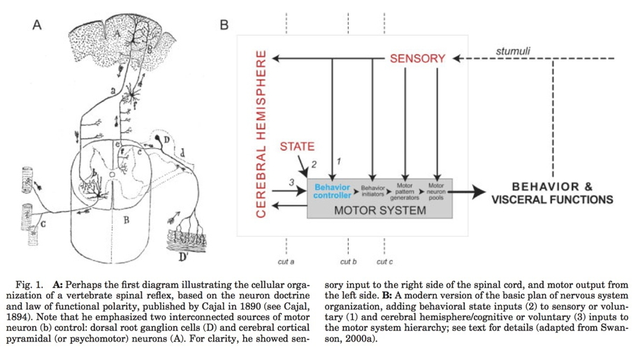
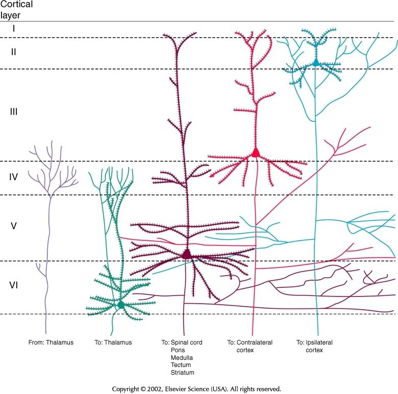
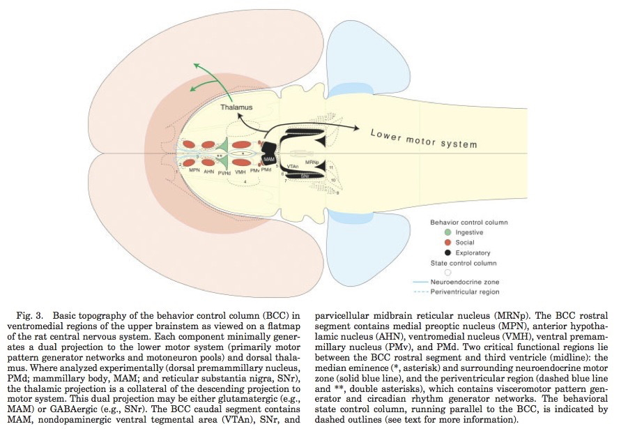
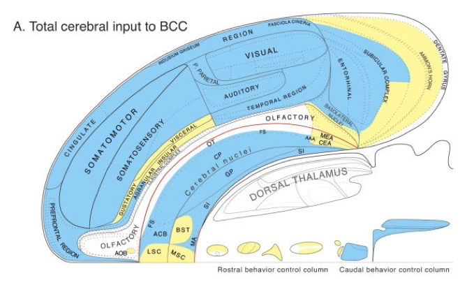
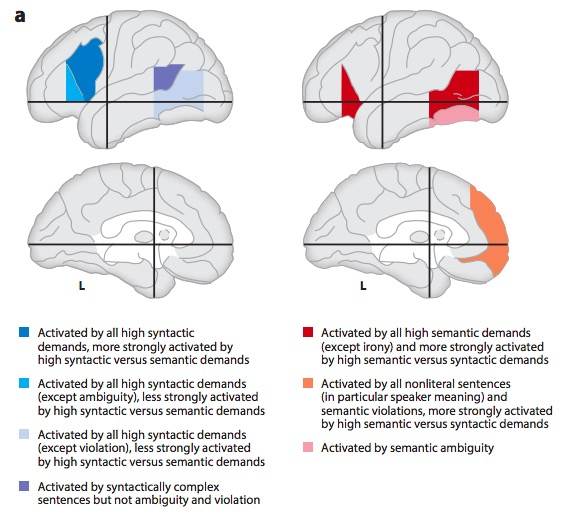

Cognition and Language
The emergence of complex behavior
Cambrian Explosion
Sparked by behavioral imperatives? (Fox, 2016)
- Behavior requires energy
- Behavior requires perception at a distance
- Behavior requires action
- Actions require
- Problem solving, (sequence) planning
- Current + stored information (memory)
Behaviors realized through…
- Perception at a distance of what/where
- Locomotion
- Approach/avoid/explore
- Object manipulation/consumption
- Signaling/communication
- Physiological regulation
Complex behavior ~ Nervous systems





Cognition
Combines…
- Perception
- Attention
- Imagery
- Learning and conditioning
- Memory
- Problem-solving
- Planning, executing, evaluating sequences of behavior
- Language
A form of computation?

In digital computers
- Data are in binary (0,1) digit (bit) form
- Same sequence of bits could be a letter, a number, part of an image, a bit of sound, etc.
- Operations on data, e.g.,
add,store, also in binary form - Distinct (physically separate) circuits for
- Input (keyboards, mice, cameras, mics, network cards)
- Processing (Central Processing Units or CPUs; Graphic Processing Units or GPUs)
- Storage (RAM, flash drives, hard drives, etc.)
- Output (displays, speakers, printers network commands)
- Software
- Files that cause operations on data (e.g., implement algorithms)

 But…
But…
There is a popular belief in neuroscience that we are primarily data limited, and that producing large, multimodal, and complex datasets will, with the help of advanced data analysis algorithms, lead to fundamental insights into the way the brain processes information. These datasets do not yet exist, and if they did we would have no way of evaluating whether or not the algorithmically-generated insights were sufficient or even correct. To address this, here we take a classical microprocessor as a model organism, and use our ability to perform arbitrary experiments on it to see if popular data analysis methods from neuroscience can elucidate the way it processes information.
…current analytic approaches in neuroscience may fall short of producing meaningful understanding of neural systems, regardless of the amount of data. (Jonas & Kording, 2017)
Cognition and the cerebral cortex

Cortical Macrostructure
- Areas
- Unimodal sensory
- Polymodal association
- Motor
- Connections
- Association
- Commissural

Cortical Microstructure
- Columnar
- Regional cytoarchitectonic differences
 - Laminar
- Laminar

| Layer | Connection type | Comments |
|---|---|---|
| I | Few cell bodies | |
| II | Efferent | Ipsilateral association via large pyramidal cells |
| III | Efferent | Contralateral commissural |
| IV | Afferent | from thalamus; small stellate & granual cells; V1 has sublayers |
| V | Efferent | Superficial -> Basal ganglia; Deep -> brainstem, spinal cord; pyramidal cells |
| VI | Efferent | Thalamus |






Processing networks
“Although it has long been assumed that cognitive functions are attributable to the isolated operations of single brain areas, we demonstrate that the weight of evidence has now shifted in support of the view that cognition results from the dynamic interactions of distributed brain areas operating in large-scale networks….”


Data-driven dynamics
- Cortical states have high dimensionality
- Is there a lower-dimensional space that maps onto behavior?
(Shine et al., 2019)
- Data from \(n=200\) adult participants in Human Connectome Project (HCP)
- 7 cognitive tasks
- Dimension reduction via principal components analysis (PCA)

- Map PCAs to time series…

- How do these brain states map to cognition?
- Explore overlap with NeuroSynth ‘topic families’

The results of our multimodal analysis revealed that the neural activity required for the execution of cognitive tasks corresponds to flow within a low-dimensional state space[43]. Across multiple, diverse cognitive tasks, the dynamics of large-scale brain activity engage an integrative core of brain regions that maximizes information-processing complexity and facilitates cognitive performance; only to then dissipate as the tasks conclude, flowing towards a more segregated architecture…Across multiple cognitive tasks with markedly different behavioral requirements, the dynamics of human brain activity were found to occupy a low-dimensional state space embedding that may form the functional backbone of cognition in the human brain.
The neural bases of cognitive control (Cai, Taghia, & Menon, 2024)
We discover a shared brain state across seven distinct cognitive tasks and found that the dynamics of this shared brain state predicted cognitive control abilities in each task.

- Data from Human Connectome Project (HCP) (\(n=90\) adults) and Dual Mechanisms of Cognitive Control (DMCC) project (\(n=50\) adults)
- n-back reference task compared with other tasks: AxCPT, Cued task-switching, Sternberg memory task, Stroop.
- What patterns of brain activation are similar in space and time to one another AND predict behavior (task performance)?
- Additional goal was to compare these states to a sample of children with Attention Deficit Hyperactivity Disorder (ADHD)

Summing up
- Cognition involves
- Do what, where, when, and how
- The “cognitive” cortex
- Dorsolateral prefrontal cortex (DLPFC)
- Bilateral intraparietal sulcus
- Bilateral anterior insula
- Bilateral middle frontal gyrus (MFG)
- Posterior cingulate cortex (PG)
- Ventromedial prefrontal cortex (VMPFC)
- Processing networks
- Functional specialization
- Dynamic interaction
- Low dimensional dynamics
- Nested feedback control loops


- What do we want to know?
- What parts of the nervous system are evoked by cognitive process X? (localization)
- How does neural data support/undermine theory X of cognition?
- “…our survey nevertheless still makes it clear that very few resources are currently being devoted to using neuroimaging data to test theories about cognition.” (Tressoldi, Sella, Coltheart, & Umiltà, 2012)
- Also (Coltheart, 2013)
- Neuroscience can constrain models of cognition (White & Poldrack, 2013)
- One process or two
- Serial vs. parallel processing
- Show me your (cognitive) model…


Language and the brain
Language behavior
- Productive
- Speaking (2-5 words/s), modulate prosody (intonation), often combined with gesture
- Writing, typing (.5-1.5 words/s)
- Receptive
- Listening, responding (facial expressions, gestures, laughter, etc.)
- Reading (3-5 words/s)
- How so fast? Time for feedback?
Hierarchical structure of language information
- Phonetic
- |Ber| |wiTH| |mē|
- Syntactic
- Semantic


- Pragmatic
Wernicke-Geschwind (WG) model
- Carl Wernicke
- Norman Geschwind
- Perception ≠ production

Wernicke’s area (Brodmann Area or BA 42)
- Adjacent to primary auditory cortex (A1; Heschl’s gyrus; BA 41)
- Perception
- Receptive or ‘fluent’ aphasia


Broca’s area
- Inferior frontal gyrus, pars opercularis (BA 44) & pars angularis (BA 45)
- Production
- Expressive aphasia

Dual streams (Hickok & Poeppel, 2007)?
- Ventral (speech signals -> semantics)
- Dorsal (speech signal acoustics -> articulatory networks in frontal lobe)

Metaanalytic evidence (Hagoort & Indefrey, 2014)



“A meta-analysis of numerous neuroimaging studies reveals a clear dorsal/ventral gradient in both left inferior frontal cortex and left posterior temporal cortex, with dorsal foci for syntactic processing and ventral foci for semantic processing. In addition…further networks need to be recruited to realize language-driven communication to its full extent.”
Summing up
- WG model incomplete, simplistic
- Broca’s not just production; Wernicke’s not just perception
- Beyond single words…
- Rapid, fluent comprehension and production of language relies on
- Distributed temporal/frontal networks
- Efficient bottom-up and top-down processing
- Syntactic vs. semantic/articulatory processing